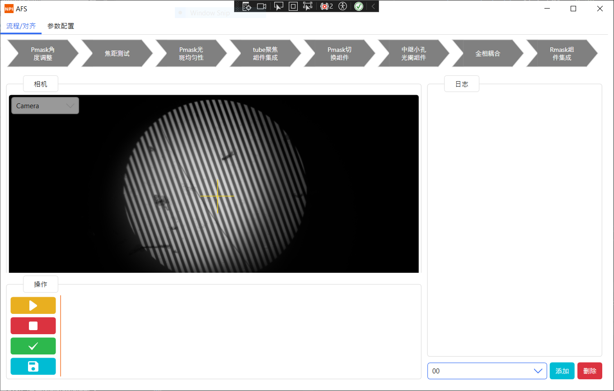
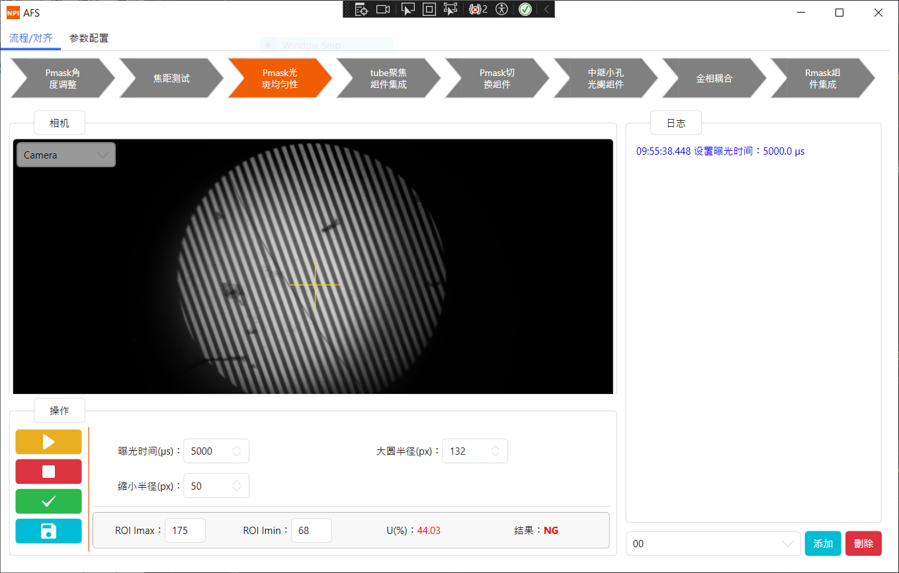
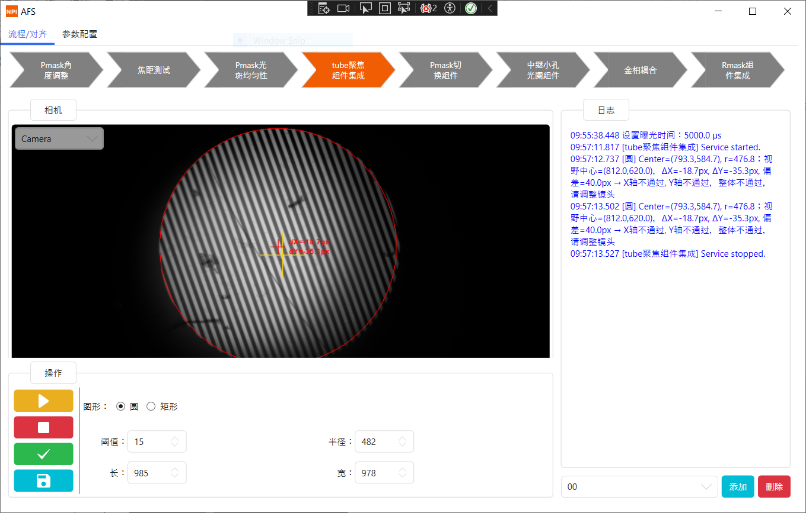
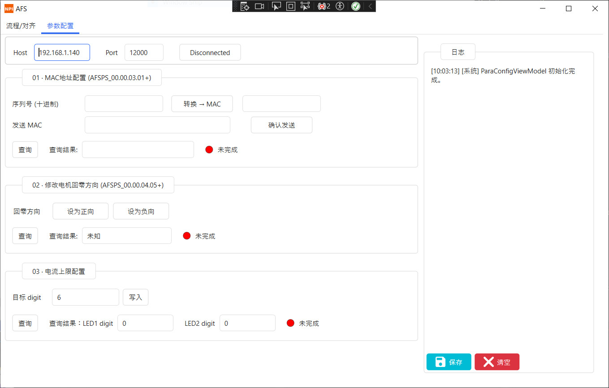

Industrial software
built for real constraints.




Why C++ for the algorithm layer?
Industrial image processing runs on every frame at acquisition speed — typically 30–120 fps. Managed C# has GC pauses and cannot use SIMD intrinsics as freely as native C++. Isolating algorithms in Align.Algorithm as a native DLL means the hot path never competes with UI scheduling or garbage collection.
Why MVVM throughout?
Industrial software has a long maintenance tail — operators modify UI requirements frequently while algorithms stay stable. MVVM enforces a hard separation: ViewModels expose observable state; Views bind to it. UI changes never touch business logic, and ViewModels can be unit-tested without any UI framework.
Why a plugin system for cameras?
A factory may run several different camera models across product lines. The Plugin.Camera.* pattern — each vendor SDK wrapped behind a shared ICamera interface — means hardware can be swapped or added without modifying, recompiling, or retesting the core inspection logic.
TCP + closed-loop verification
Device configuration over TCP is inherently unreliable. The ParaConfig module uses a write → query → compare loop: every parameter write is followed by a read-back before confirming success to the operator. This eliminated a class of silent misconfiguration bugs difficult to diagnose in production.
A self-contained module for commissioning and configuring board-level devices via TCP. Every operation exposes a write path, a read-back verification, and a status indicator.